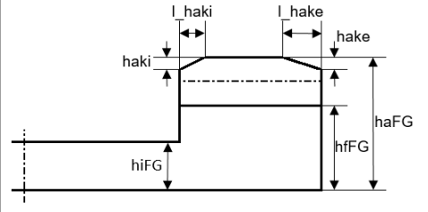

|
|
|


齿顶修形
您指定齿顶修形量 hake(i) 和齿顶修形长度 lhake(I)（见图 17.8），位于 选项卡中。然后对齿顶进行修形以防止齿变尖。当您指定齿顶修形时，我们建议您选择 （参见"常规"章）并增加计算截面数，以完整显示 3D 导出的修形。

图 17.8：面齿轮的特征值
English Original
Tip alteration
You specify the tip alteration hake(i) and the tip alteration length lhake(I) (see Figure 17.8) in the tab. The tip is then altered to prevent the tooth becoming pointed. When you specify the tip alteration, we recommend you select (see chapter General) and increase the number of calculated sections, to fully display the modification for the 3D export.
Figure 17.8: Characteristic values of a face gear